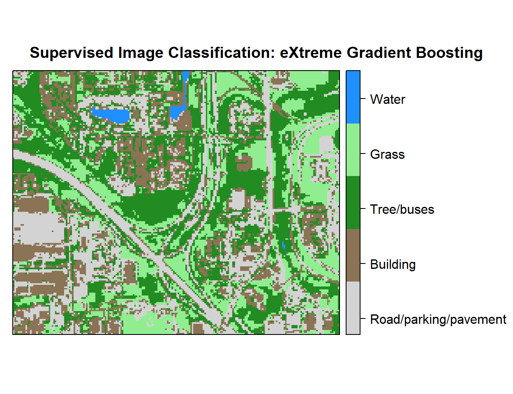

eXtreme Gradient Boosting - Supervised Image Classification
In this lesson we will learn about Extreme Gradient Boosting (XGBoost). XGBoost has recently been dominating applied machine learning and Kaggle competitions for structured or tabular data . XGBoost is an implementation of gradient boosted decision trees, which are designed for speed and performance. Technically it is one kind of Gradient boosting for regression and classification problems by ensemble of weak prediction models sequentially , with each new model attempting to correct for the deficiencies in the previous model.
Before training, you will need to install “xgboost” in R
#install.packages("xgboost")Load R packages
library(rgdal) # spatial data processing
library(raster) # raster processing
library(plyr) # data manipulation
library(dplyr) # data manipulation
library(RStoolbox) # plotting spatial data
library(RColorBrewer) # color
library(ggplot2) # plotting
library(sp) # spatial data
library(caret) # machine laerning
library(doParallel) # Parallel processingThe data could be available for download from here.
# Define data folder
dataFolder<-"D://Dropbox//Spatial Data Analysis and Processing in R//DATA_09//DATA_09//"Load data
train.df<-read.csv(paste0(dataFolder,".\\Sentinel_2\\train_data.csv"), header = T)
test.df<-read.csv(paste0(dataFolder,".\\Sentinel_2\\test_data.csv"), header = T)Start foreach to parallelize for model fitting
mc <- makeCluster(detectCores())
registerDoParallel(mc)Tunning prameters
myControl <- trainControl(method="repeatedcv",
number=3,
repeats=2,
returnResamp='all',
allowParallel=TRUE)Parameter for Tree Booster
In the grid, each algorithm parameter can be specified as a vector of possible values . These vectors combine to define all the possible combinations to try.
tune_grid <- expand.grid(nrounds = 200, # the max number of iterations
max_depth = 5, # depth of a tree
eta = 0.05, # control the learning rate
gamma = 0.01, # minimum loss reduction required
colsample_bytree = 0.75, # subsample ratio of columns when constructing each tree
min_child_weight = 0, # minimum sum of instance weight (hessian) needed in a child
subsample = 0.5) # subsample ratio of the training instanceTrain xgbTree model
We will use the train() function from the of caret package with the “method” parameter “xgbTree” wrapped from the XGBoost package.
set.seed(849)
fit.xgb<- train(as.factor(Landuse)~B2+B3+B4+B4+B6+B7+B8+B8A+B11+B12,
data=train.df,
method = "xgbTree",
metric= "Accuracy",
preProc = c("center", "scale"),
trControl = myControl,
tuneGrid = tune_grid,
tuneLength = 10
)
fit.xgb## eXtreme Gradient Boosting
##
## 16764 samples
## 9 predictor
## 5 classes: 'Building', 'Grass', 'Parking/road/pavement', 'Tree/bushes', 'Water'
##
## Pre-processing: centered (9), scaled (9)
## Resampling: Cross-Validated (3 fold, repeated 2 times)
## Summary of sample sizes: 11176, 11175, 11177, 11175, 11175, 11178, ...
## Resampling results:
##
## Accuracy Kappa
## 0.995884 0.9945362
##
## Tuning parameter 'nrounds' was held constant at a value of 200
## 0.75
## Tuning parameter 'min_child_weight' was held constant at a value
## of 0
## Tuning parameter 'subsample' was held constant at a value of 0.5Stop cluster
stopCluster(mc)Confusion Matrix - train data
p1<-predict(fit.xgb, train.df, type = "raw")
confusionMatrix(p1, train.df$Landuse)## Confusion Matrix and Statistics
##
## Reference
## Prediction Building Grass Parking/road/pavement Tree/bushes
## Building 3087 0 2 0
## Grass 0 3481 1 0
## Parking/road/pavement 14 0 3870 0
## Tree/bushes 0 1 1 5668
## Water 0 0 0 0
## Reference
## Prediction Water
## Building 0
## Grass 0
## Parking/road/pavement 0
## Tree/bushes 1
## Water 638
##
## Overall Statistics
##
## Accuracy : 0.9988
## 95% CI : (0.9982, 0.9993)
## No Information Rate : 0.3381
## P-Value [Acc > NIR] : < 2.2e-16
##
## Kappa : 0.9984
##
## Mcnemar's Test P-Value : NA
##
## Statistics by Class:
##
## Class: Building Class: Grass
## Sensitivity 0.9955 0.9997
## Specificity 0.9999 0.9999
## Pos Pred Value 0.9994 0.9997
## Neg Pred Value 0.9990 0.9999
## Prevalence 0.1850 0.2077
## Detection Rate 0.1841 0.2076
## Detection Prevalence 0.1843 0.2077
## Balanced Accuracy 0.9977 0.9998
## Class: Parking/road/pavement Class: Tree/bushes
## Sensitivity 0.9990 1.0000
## Specificity 0.9989 0.9997
## Pos Pred Value 0.9964 0.9995
## Neg Pred Value 0.9997 1.0000
## Prevalence 0.2311 0.3381
## Detection Rate 0.2309 0.3381
## Detection Prevalence 0.2317 0.3383
## Balanced Accuracy 0.9989 0.9999
## Class: Water
## Sensitivity 0.99844
## Specificity 1.00000
## Pos Pred Value 1.00000
## Neg Pred Value 0.99994
## Prevalence 0.03812
## Detection Rate 0.03806
## Detection Prevalence 0.03806
## Balanced Accuracy 0.99922Confusion Matrix - test data
p2<-predict(fit.xgb, test.df, type = "raw")
confusionMatrix(p2, test.df$Landuse)## Confusion Matrix and Statistics
##
## Reference
## Prediction Building Grass Parking/road/pavement Tree/bushes
## Building 1315 0 1 0
## Grass 0 1491 0 1
## Parking/road/pavement 13 0 1656 0
## Tree/bushes 0 0 3 2428
## Water 0 0 0 0
## Reference
## Prediction Water
## Building 0
## Grass 0
## Parking/road/pavement 0
## Tree/bushes 0
## Water 273
##
## Overall Statistics
##
## Accuracy : 0.9975
## 95% CI : (0.996, 0.9985)
## No Information Rate : 0.3383
## P-Value [Acc > NIR] : < 2.2e-16
##
## Kappa : 0.9967
##
## Mcnemar's Test P-Value : NA
##
## Statistics by Class:
##
## Class: Building Class: Grass
## Sensitivity 0.9902 1.0000
## Specificity 0.9998 0.9998
## Pos Pred Value 0.9992 0.9993
## Neg Pred Value 0.9978 1.0000
## Prevalence 0.1849 0.2076
## Detection Rate 0.1831 0.2076
## Detection Prevalence 0.1833 0.2078
## Balanced Accuracy 0.9950 0.9999
## Class: Parking/road/pavement Class: Tree/bushes
## Sensitivity 0.9976 0.9996
## Specificity 0.9976 0.9994
## Pos Pred Value 0.9922 0.9988
## Neg Pred Value 0.9993 0.9998
## Prevalence 0.2312 0.3383
## Detection Rate 0.2306 0.3381
## Detection Prevalence 0.2324 0.3385
## Balanced Accuracy 0.9976 0.9995
## Class: Water
## Sensitivity 1.00000
## Specificity 1.00000
## Pos Pred Value 1.00000
## Neg Pred Value 1.00000
## Prevalence 0.03802
## Detection Rate 0.03802
## Detection Prevalence 0.03802
## Balanced Accuracy 1.00000Predition at grid location
# read grid CSV file
grid.df<-read.csv(paste0(dataFolder,".\\Sentinel_2\\prediction_grid_data.csv"), header = T)
# Preddict at grid location
p3<-as.data.frame(predict(fit.xgb, grid.df, type = "raw"))
# Extract predicted landuse class
grid.df$Landuse<-p3$predict
# Import lnaduse ID file
ID<-read.csv(paste0(dataFolder,".\\Sentinel_2\\Landuse_ID.csv"), header=T)
# Join landuse ID
grid.new<-join(grid.df, ID, by="Landuse", type="inner")
# Omit missing values
grid.new.na<-na.omit(grid.new) Convert to raster
x<-SpatialPointsDataFrame(as.data.frame(grid.new.na)[, c("x", "y")], data = grid.new.na)
r <- rasterFromXYZ(as.data.frame(x)[, c("x", "y", "Class_ID")])Plot Landuse Map:
# Color Palette
myPalette <- colorRampPalette(c("light grey","burlywood4", "forestgreen","light green", "dodgerblue"))
# Plot Map
LU<-spplot(r,"Class_ID", main="Supervised Image Classification: eXtreme Gradient Boosting" ,
colorkey = list(space="right",tick.number=1,height=1, width=1.5,
labels = list(at = seq(1,4.8,length=5),cex=1.0,
lab = c("Road/parking/pavement" ,"Building", "Tree/buses", "Grass", "Water"))),
col.regions=myPalette,cut=4)
LU
Write raster
# writeRaster(r, filename = paste0(dataFolder,".\\Sentinel_2\\XGB_Landuse.tiff"), "GTiff", overwrite=T)rm(list = ls())